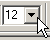

Format Font
A font is a particular design for a set of characters that combines typefaces and other qualities, such as size, pitch, and spacing. For example, Times Roman is a typeface that defines the shape of each character.
Serif Font & Sans Serif Font
Font Face
In certain cases, you might want to use a different font. You can use different fonts for different reasons. There are two common typefaces, serif and sans serif. A serif font is a typeface with a small decorative line added as embellishment to the basic form of a character. The most common serif typeface is Times Roman. Whereas a sans serif font is a typeface without the decorative line added and are therefore more difficult to read, e.g. Helvetica, Arial, etc. For this reason, they are used most often for short text components such as headlines or captions.
Let's begin by changing the font face of some text in your document by following these few basic steps:
- Open the document you created in Lesson 1
- Select text you would like to change
- Select the arrow next to the Font dialog
A list of font selections displays.
- Choose a font by pressing the left mouse button when you have your mouse arrow over the desired font
This option will automatically change the font of the text highlighted.
Font Size
You might find it necessary to change the size of the font as well. You might want to enlarge a font to grab someone's attention or to make your document more readable to the visually impaired. You may want to diminish a font for items such as footnotes.
- Select the text you would like to change
- Select arrow next to the Font Size dialog
This will display the menu containing font size selections.
- Select a font size by pressing the left mouse button while pointing the mouse arrow over the desired font size
This option will automatically alter the font size of the highlighted text.
You have just completed this section of Lesson 3 and now know how to format the type and size of the fonts in your documents. If you would like to learn how to set up your margins, select Next. If you'd like to go to a different section within this lesson or to a new lesson, choose from one of the options in the Navigation bar.